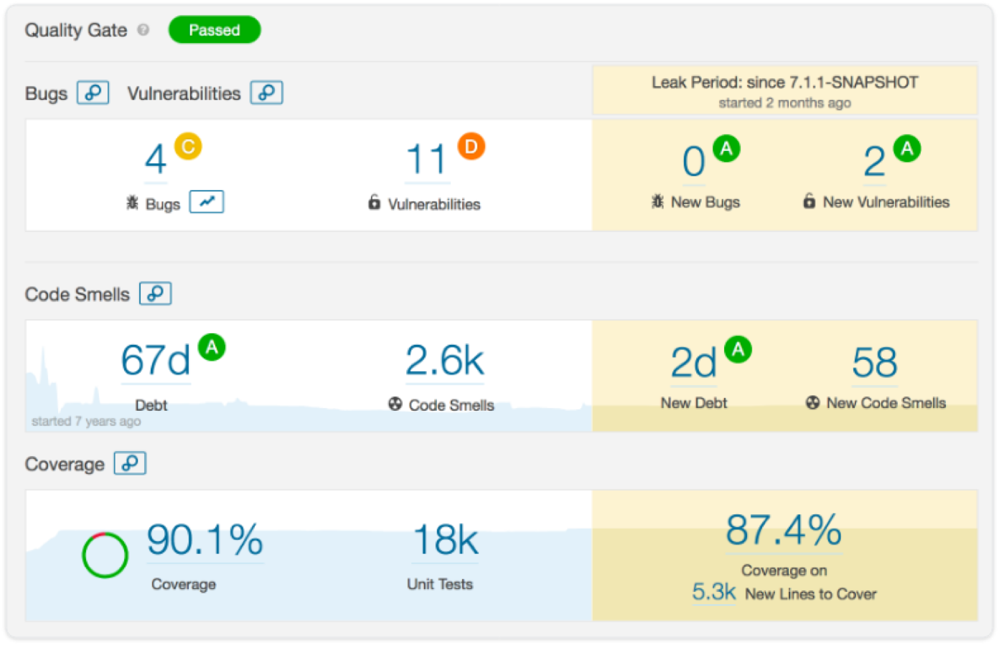

Sonarsource
SonarSource為程式碼品質提供了世界一流的解決方案。其開源和商業版本可説明各種規模的客戶管理其應用程式的程式碼品質，降低風險並最終交付更可靠的軟體。
SonarSource主要產品當中的SonarQube程式碼管理平臺和SonarLint IDE開發外掛程式分別提供了不同的功能。SonarQube在持續集成項目中，可以通過jenkins外掛程式在專案中快速實現程式碼掃描，並且提供了詳細的問題分析和bugs修改意見。全球用戶超過1000多家客戶，包括三星、騰訊、招商銀行等，並被超過85,000家組織使用。
通過外掛程式形式，可以支持包括java,C#,C/C++,PL/SQL,Cobol,JavaScrip,Groovy等等二十幾種程式設計語言的代碼品質管制與檢測，針對不同的程式設計語言其所提供的分析方式也有所不同： 對於所有支援的程式設計語言，SonarQube 都提供源了代碼的靜態分析功能； 對於某些特定的程式設計語言，SonarQube 提供了對編譯後代碼的靜態分析功能。
SonarQube 並不是簡單地將各種品質檢測工具的結果（例如 FindBugs，PMD 等）直接展現給客戶，而是通過不同的外掛程式演算法來對這些結果進行再加工，最終以量化的方式來衡量程式碼品質，從而方便地對不同規模和種類的工程進行相應的代碼品質管制。
2